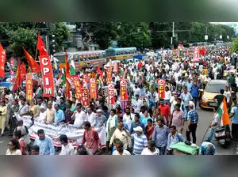
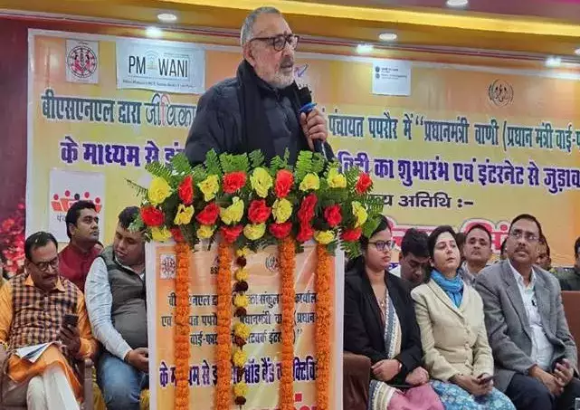
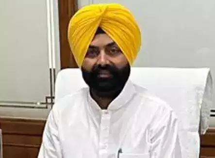

Minor disputes: Govt proposes panchayat-level mediation amid huge backlog of cases
As India grapples with a significant backlog of cases across various levels of the judiciary and increasing litigation expenses, the Central Government is introducing a proposal for gram panchayat-level mediation to address minor civil and criminal disputes. This initiative draws inspiration from the successful models implemented in Bihar and Himachal Pradesh.
15 May, 2024, 01:53 PM IST

Rivals BJP, CPM and Congress come togather to keep Mamata's TMC away in Bengal Panchayats
BJP, CPM, and Congress members in West Bengal have banded together to form governing boards in three separate gram panchayats. An unusual alliance, the motive was to counter the Trinamool Congress' influence, particularly at the grassroots level. BJP and CPM combined to form a board in Mahishadal, which caused tension in Amritberia and collaboration between the three parties in Maheshail I and Nadia.
15 May, 2024, 10:27 AM IST

Smart Gram Panchayat: Govt launches programme to digitize gram panchayat in Bihar
The aim of the project is to extend PM-WANI (Prime Minister’s WiFi Access Network Interface) service in all gram panchayats across Begusarai district in Bihar. Begusarai has now become the first district in Bihar to equip all gram panchayats with WiFi services under PM-WANI.
14 May, 2024, 10:21 PM IST

Punjab suspends 2 IAS officers over dissolution of gram panchayats
"Hours after taking a "U-turn" by informing the high court that it is withdrawing its notification dissolving all gram panchayats in the state, the Punjab government suspended two senior IAS officers on Thursday for a "technically-flawed" decision.The government suspended 1994-batch Indian Administrative Service (IAS) officer Dhirendra Kumar Tiwari and 2009-batch IAS officer Gurpreet Singh Khaira, Director with immediate effect under the provisions of rule 3(1) of the All India Services (Discipline and Appeal) Rules, 1969, according to an official order.
14 May, 2024, 08:12 PM IST
Temple and Panchayat payments go digital in next fintech wave
The next wave of digital payments will be led by ‘person-to-government’ payments moving away from cash. Adhering to the Digital India policy, the government-backed National Informatics Centre (NIC) is building applications which can accept payments digitally, make settlements and generate invoices -- all in one go for different government departments. Some early pilots are running where a PoS device is being installed at the level of a village panchayat and even in temples to ensure that cash deposits move digital
15 May, 2024, 01:53 PM IST
Paytm deploys 10,000 devices for digitising panchayat payments
The company has already received a mandate to implement QR/Card Machines and soundbox for more than 7,000 gram panchayats in Andhra Pradesh, in collaboration with major banks such as HDFC Bank, SBI, IDFC First Bank, and others. A direct mandate has also been received from Uttar Pradesh and Goa’s state department for the deployment of card machines and soundbox. Financial services major Paytm has deployed nearly 10,000 payment devices such as soundbox, QR codes and card machines for the gram panchayats of several states in India.
15 May, 2024, 01:53 PM IST

Kerala's Pullampara is India's first fully digital literate panchayat
Pullampara became the first grama panchayat in the country to attain full digital literacy among its residents. Chief Minister Pinarayi Vijayan made the official announcement at a function in Mamoodu near Venjaramoodu on Wednesday. Pinarayi said digital literacy was imperative for the public to get government services as well as connecting with the global knowledge network.The state government has made 800-odd government services available online and the digitally literate population can make maximum use of them.
15 May, 2024, 01:53 PM IST
DSC for Gram Panchayat: Modern Solution for Rural Challenges
DSC for Gram Panchayat has transformed everything by bringing important services online, making things easier for everyone. No matter who you are, a farmer who always struggled to get his land documents sorted, or a new mother eager to register her baby's birth, DSC makes it simple for you in just a few clicks.This not only makes the government work smoother and fairer but also cuts down on problems like corruption. It's like giving everyone a key to unlock the benefits of technology and making life simpler and more accessible for everyone in the village.
15 May, 2024, 01:53 PM IST